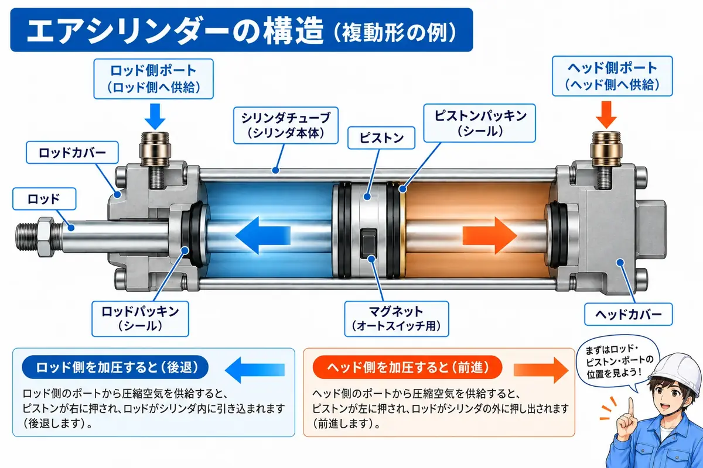
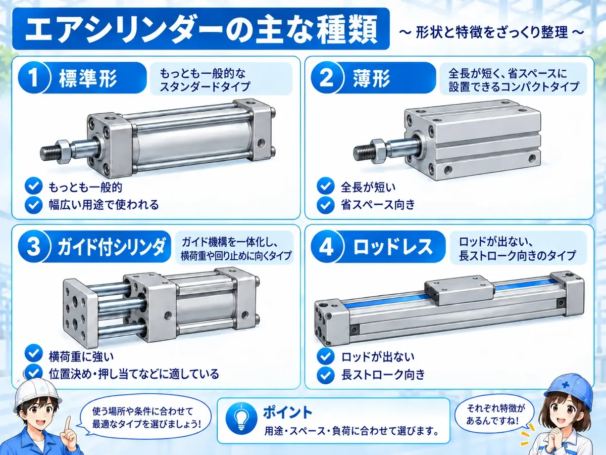
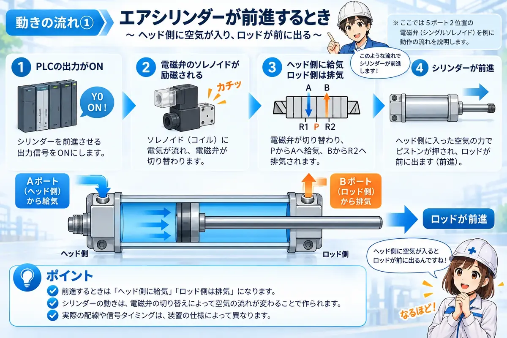
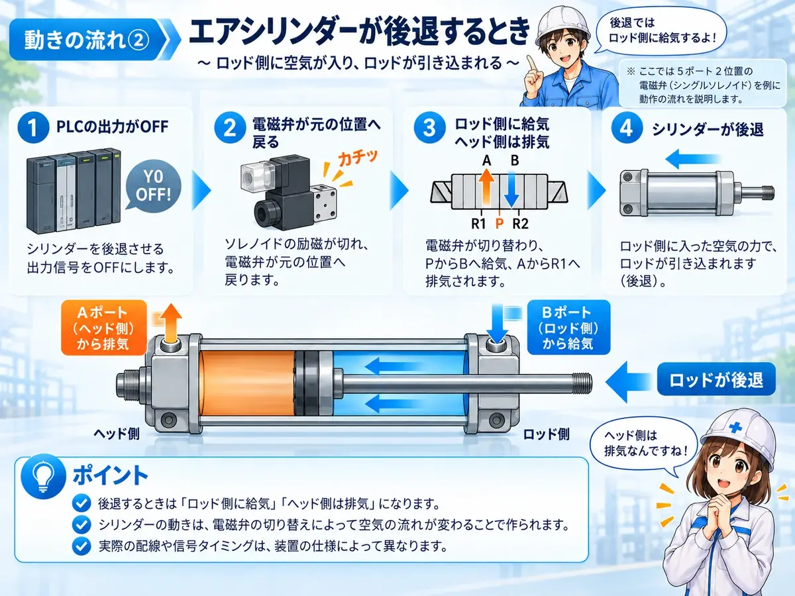
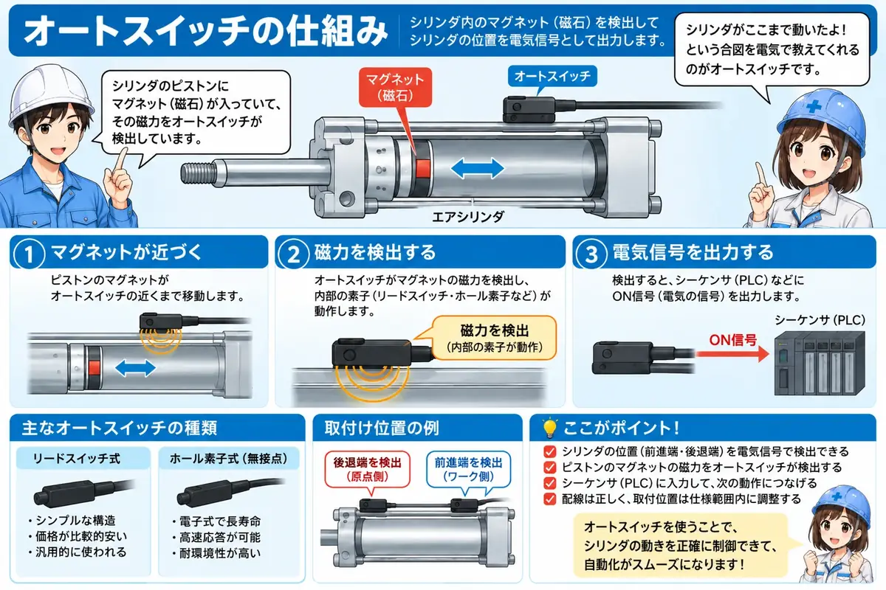
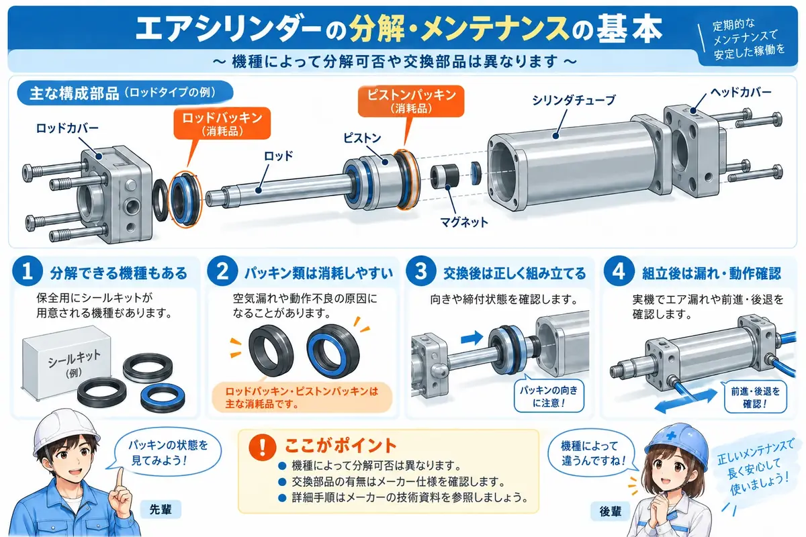

エアシリンダとは？
エアシリンダとは、圧縮空気の力でロッドやスライダを動かす空圧機器です。設備では、ワークを押す、引く、持ち上げる、位置決めする、開閉するなど、まっすぐな動きを作る場面でよく使われます。
電気制御の現場では、PLCやリレーの信号でエアバルブを切り替え、その空気の流れでエアシリンダを動かす構成がよくあります。つまり、エアシリンダを見る時は、シリンダ単体だけでなく、電気信号・エアバルブ・空気圧もセットで見ることが大切です。
まずは「空気でまっすぐ動く部品」と考える
エアシリンダはモータのように回転する部品ではなく、基本的には直線方向に動く部品です。前進・後退のどちらへ動いているかを見ると、設備の動作を追いやすくなります。
エアシリンダの基本構造
エアシリンダには、空気を入れるポート、内部で動くピストン、外へ出て動作を伝えるロッドなどがあります。圧縮空気がどちら側へ入るかによって、ピストンとロッドが動きます。

ピストン
ピストンが内部で動く部分です。設備によって丸型、角型、薄型、ガイド付きなどいろいろな形があります。
ロッド
シリンダの動きを外へ伝える部分です。ワークを押す、引く、治具を動かすなどの動作につながります。
ポート
空気が入ったり抜けたりする口です。複動シリンダでは前進側と後退側に空気を送ります。
磁石・スイッチ取付部
リードスイッチやオートスイッチを取り付け、前進端・後退端を検出するために使います。
単動・複動と、最初に見る基本仕様
エアシリンダの作動方式は、大きく単動形と複動形に分けて考えると理解しやすくなります。 CKDの公式解説では、単動形は一方向を空気圧で動かし、戻りをばねや外力で行う方式、複動形は両方向を空気圧で動かす方式として整理されています。
| 作動方式 | 動きの考え方 | 初心者が見るポイント |
|---|---|---|
| 単動形 | 片方向を空気圧で動かし、戻りをばね・外力などで行う | ばね戻りか、空気圧を使う方向はどちらか |
| 複動形 | 前進・後退の両方向を空気圧で動かす | 2つのポートと、切替バルブの動きをセットで見る |
形状にもいくつか種類がある
エアシリンダは作動方式だけでなく、設備のスペースや負荷に合わせて形状も選ばれます。初心者はまず、標準形・薄形・ガイド付・ロッドレスのような代表的な違いがあることを知っておけば十分です。

ボア径（チューブ内径）
ボア径は、シリンダの太さ・出力を考える基本寸法です。 同じ使用圧力などの条件なら、一般にボア径が大きいほど大きな力を得やすくなります。ただし実際の選定は、負荷、取付姿勢、速度、使用圧力などを含めてメーカーの選定資料で確認します。
ストローク
ストロークは、シリンダが移動する距離です。ボア径とストロークは別の項目なので、型式を見る時は「どれくらいの太さか」と「どれくらい動くか」を分けて確認します。
型式を見る時の最初の4項目
初心者はまず、作動方式・ボア径・ストローク・オートスイッチの有無を見ると、シリンダの基本仕様をつかみやすくなります。
前進・後退の仕組み
エアシリンダは、空気を入れる向きによって前進・後退します。複動シリンダの場合、片側に空気を送ると前進し、反対側に空気を送ると後退します。


PLCやリレーから出力する
ソレノイドバルブへ電気信号を出します。
エアバルブが切り替わる
空気の通り道が変わり、シリンダの片側へ空気が送られます。
シリンダが動く
内部のピストンが押され、ロッドが前進または後退します。
動きが遅い時は空気だけを見ない
シリンダの動きが遅い場合、空気圧やスピードコントローラだけでなく、負荷、ガイドの渋さ、ワークの引っかかりも確認します。
速度調整とクッションの考え方
エアシリンダの速度は、供給・排気する空気の流れと関係します。設備ではスピードコントローラを使って流量を調整し、シリンダの動く速さを整える構成がよく使われます。
一方、ストローク端での衝撃をやわらげるために、シリンダ側にクッション機構を持つ製品もあります。CKDの公式解説では、エアクッションやゴムクッションなどが紹介されています。
速度調整とクッションは役割が違う
スピードコントローラは主に動作速度を整える部品、クッションは主にストローク端の衝撃をやわらげる仕組みです。調整方法や許容条件は型式ごとに異なるため、実機ではメーカー資料を優先します。
エアバルブとの関係
エアシリンダを前進・後退させるためには、空気の流れを切り替える必要があります。その切り替えを行うのがエアバルブです。
PLC出力 → ソレノイドバルブ → エアバルブ切替 → シリンダ動作という流れで前進・後退します。シリンダが動かない時は、シリンダ本体だけでなく、エアバルブに信号が来ているか、空気が供給されているかも確認します。
シリンダ本体以外が原因のことも多い
エアシリンダが動かない原因は、シリンダ本体とは限りません。ソレノイドに電圧が来ていない、バルブが切り替わっていない、元圧がない、排気できていないなど、周辺も含めて確認します。

先輩シリンダが動かない時に、いきなりシリンダ本体を疑うより、まずはエアバルブと空気圧も一緒に見るといいよ。

後輩シリンダの問題に見えても、実は電気信号やバルブ側が原因のこともあるんですね。
オートスイッチ（リードスイッチ）との関係
エアシリンダでは、前進端や後退端を確認するためにオートスイッチが使われます。ピストンに内蔵されたマグネットを検出するタイプがあり、その信号をPLC入力へ返すことで、「シリンダが所定位置まで動いたか」を確認できます。

前進端
シリンダが前進しきった位置を確認します。工程の次ステップへ進む条件として使われることがあります。
後退端
シリンダが戻りきった位置を確認します。原位置確認や復帰確認として使われることがあります。
リードスイッチのランプを見る
リードスイッチ本体の表示ランプで、検出しているかを確認できる場合があります。ただしランプだけで断定しないようにします。
PLC入力を見る
リードスイッチの信号がPLC入力に入っているかを確認します。現物のランプと入力モニタをセットで見ます。
シリンダが動いていても入力が入っていないことがある
シリンダが動いていても、リードスイッチが検出していないと、PLC上では動作完了にならないことがあります。現物の動きと入力信号を分けて確認します。
分解・メンテナンスは「型式ごとの差」を見る
エアシリンダには、パッキンなどの交換部品が用意されている機種もあれば、ユーザー側での分解を前提としていない機種もあります。「エアシリンダなら全部同じように分解できる」とは考えないことが重要です。

交換部品の設定を確認
メーカーのWEBカタログでは、シリーズによって交換用パッキンセットなどが設定されています。まず型式から対象部品の有無を確認します。
取扱説明書を優先
構造が似ていても保守方法は同じとは限りません。対象型式の取扱説明書や保守資料を優先します。
安全手順に従う
実際の整備は、設備の安全手順とメーカー指定の方法に従える担当者が行います。この記事では分解手順そのものは扱いません。
別機種の交換方法をそのまま流用しない
使用するシール、潤滑、締結条件などは機種ごとに異なります。別シリーズの方法を流用しないようにします。
現場で見るポイント
エアシリンダを見る時は、電気側・空気側・機械側を分けて確認すると切り分けしやすくなります。
電気側
PLC出力、エアバルブのソレノイド、リードスイッチ入力、センサランプを確認します。
空気側
元圧、レギュレータ、エアバルブ、チューブ接続、排気、スピードコントローラを確認します。
機械側
ロッドの引っかかり、ワークの干渉、ガイドの渋さ、取り付けのズレを確認します。
入力・出力
出力が出ているか、前進端・後退端入力が入っているかを見ます。現物の動きと合わせて確認します。
手動操作の前に周囲を確認
シリンダは急に動くことがあります。手動操作やエア供給を行う前に、挟まれ、干渉、周囲の人、設備状態を必ず確認してください。
まとめ：エアシリンダは空気で直線運動する部品
エアシリンダは、圧縮空気の力で前進・後退する空圧機器です。設備では、押す、引く、持ち上げる、位置決めする、開閉するなど、直線的な動きを作る場面でよく使われます。
現場では、シリンダ本体だけでなく、エアバルブ、空気圧、スピードコントローラ、オートスイッチ、PLC入出力をセットで確認します。種類やメンテナンス方法は型式ごとの差が大きいため、最後はメーカー資料で確認するのが基本です。
最後に覚えておきたいこと
エアシリンダは「空気で動く直線運動の部品」です。動かない時は、電気側・空気側・機械側を分けて見れば、原因を切り分けしやすくなります。
参照元・技術資料
この記事では、空圧アクチュエータの一般原理は国内メーカーの技術解説を基礎にし、シリーズ固有の数値や保守条件は個別製品資料を優先しています。
CKD｜空気圧アクチュエータ（TechnoPedia）
https://www.ckd.co.jp/kiki/jp/technopedia/pneumatic/actuator.html
SMC｜CJ2/CDJ2-Zシリーズ WEBカタログ
https://ca01.smcworld.com/catalog/BEST5-6-2-2-jp/pdf/6-p0083-0129-cj2.pdf
確認時の注意
ボア径・ストローク・クッション仕様・オートスイッチ・パッキンセット・分解可否などはシリーズごとに異なります。対象型式の最新カタログ・取扱説明書を優先してください。